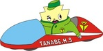
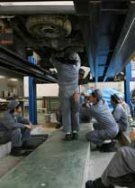

８月３日～４日の日程でポリテクセンター名古屋港（愛知県名古屋市）で第12回若年者ものづくり競技大会（主催：厚労省、中央職業能力開発協会）が行われました。
この大会は短大、専門学校、高等技術専門校、高校等に通う20歳以下の若年技術者が対象の全国大会です。近畿地区代表選手として、自動車科３年生の山中航大くん（木津南中）が出場しました。
６つの課題（各課題35分でブレーキ点検整備、エンジン故障診断、電気装置故障診断などがある）が行われ、真夏の工場内で選手達は汗だくになりながら、白熱した競技を繰り広げました。
結果は、短大、専門学校等の年上の選手が出場するなかでも、敢闘賞（4位）を受賞することができました。
自動車科ではこの全国大会に過去５回出場し、出場した生徒達は敢闘賞２回、銅メダル（３位）１回の功績を残しています。
このたび、日野自動車株式会社様より実習用ディーゼルエンジン(直列４気筒直接噴射式)１基を寄贈いただきました。
贈呈式は日野自動車株式会社様、京都日野自動車株式会社様から多数ご参加いただき、本校自動車工場にて執り行いました。
国家三級自動車整備士養成認定校である本校自動車科では、もちろんディーゼルエンジンを学ぶ実習を行っています。
今回いただいたエンジンは、最新のディーゼルエンジンの仕組みや機能を学習するために、これから大いに活躍する教材です！目にした大きく新しいエンジンを前に、生徒たちは期待に目を輝かせていました。生徒たちにすばらしい贈り物を、本当にありがとうございました。
-thumb-500xauto-69798.png)
-thumb-500xauto-69799.png)
今日は、株式会社ヒロミツ製作所の有友廣充社長をお招きし、自動車科１年生生徒たちに御講演いただきました。地元である京田辺市商工会工業部会、並びに京田辺市産業振興課のご協力により実現しました。
株式会社ヒロミツ製作所さんは、ダイハツ工業株式会社の新車開発部品の試作鈑金加工を請け負っておられ、日本屈指の技術を誇る会社です。大企業からの信頼に裏付けられた技術力や仕事に取り組む姿勢など、これから更に専門技術を学んでいく生徒たちにとって、身につけるべき大切なことを教えていただきました。
また、本校卒業生も多数在籍しており、活躍している様子に触れよい刺激となりました。
平成28年12月13日、京都陸運支局内教育センターにて、3年生自動車科26名が低圧電気取扱い安全講習を受講しました。
ハイブリットカーや電気自動車が普及し、整備士にはこれらの自動車を整備する技術が求められるようになりました。
ハイブリットカーや電気自動車の整備では危険性の高い電気を扱うことになるため、今回、受講した低圧電気取扱い安全講習を受講しなければなりません。
今回の講習では、電気の基礎的部分に加え、法規、感電した場合の応急措置、また、実車に使用されている技術についても学ぶことが出来ました。


平成27年度 工業に関する専門学科を改編しました
キーワードは「発展」
工業に関する知識や技術の学習を基礎に自動車整備技術を学び、自動車産業界で活躍できる「成長しつづけるエンジニア」の育成を目指します。

機械工学の基礎の上に、自動車の構造・設計・製作・整備試験などの実際を学び、将来の自動車製造工業や整備工業はもちろんのこと、自動車工業方面から機械工業全般にも進出できる機械技術者を育成しています。
本校自動車科は、国土交通大臣から自動車整備士第１種養成施設（３級ガソリンエンジン・ディーゼルエンジン・シャシ整備士）としての指定を受けており、課程を修了すると国家試験の受験資格が得られます。（実技試験が免除され、各学科試験が受験可）
また、自動車実習工場は普通・小型自動車分解整備事業等の陸運局認証工場になっています。
本校では、普通科・工業に関する専門学科ともに資格取得を積極的に行っています。各試験の対策講習会を開催し、ていねいな指導で頑張るみんなをサポートしています。資格を持つことは専門知識を深めるとともに、就職や進学に有利になります。
過去の取得実績
◆３級自動車整備士（ガソリンエンジン・シャシ・ディーゼルエンジン）
◆低圧電気取り扱い作業に関する特別教育講習（ハイブリッドカー講習）
◆技能検定（内燃機関組立、旋盤、機械保全など）
◆内燃機関組立２級（高校生初）・旋盤２級（京都府初）
◆危険物取扱者
◆ガス溶接技能講習
◆アーク溶接特別教育
◆二級ボイラー技士
◆基礎製図検定
◆機械製図検定
◆計算技術検定
◆情報技術検定
◆英語検定
◆漢字検定
その他の検定も生徒の希望状況に応じて実施し、生徒のやる気を応援します。


{kind=link}
{kind=link}